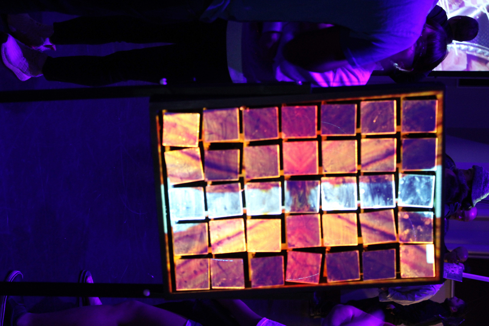
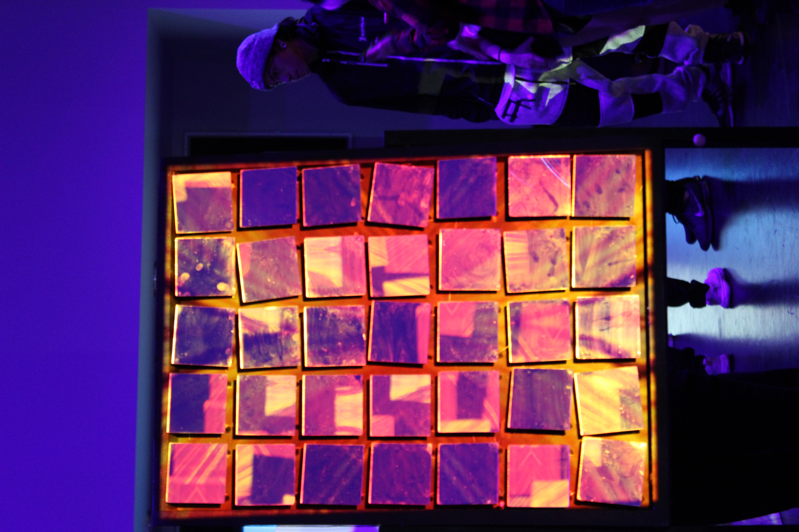
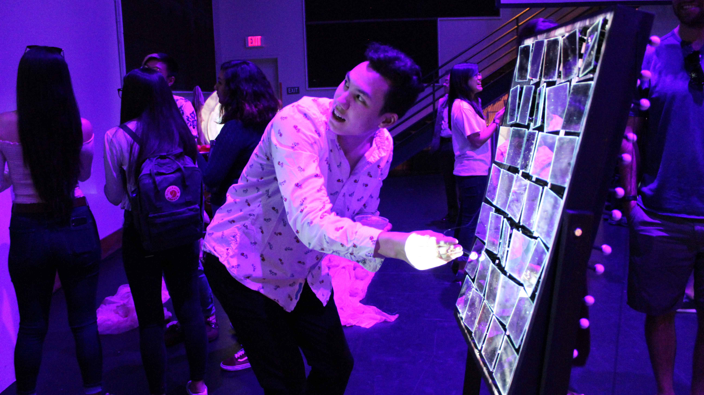
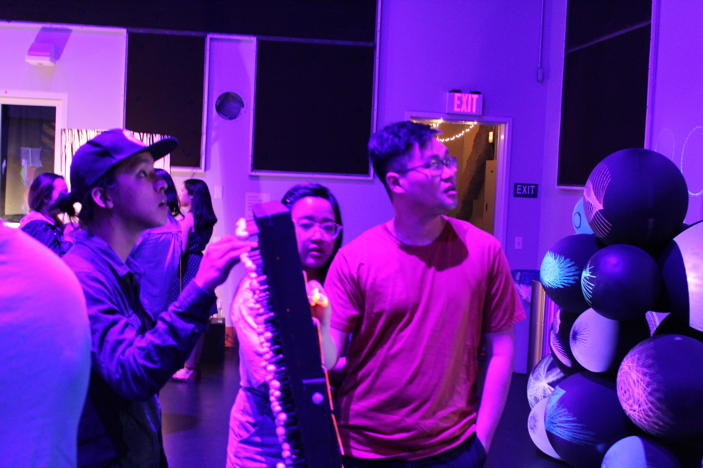
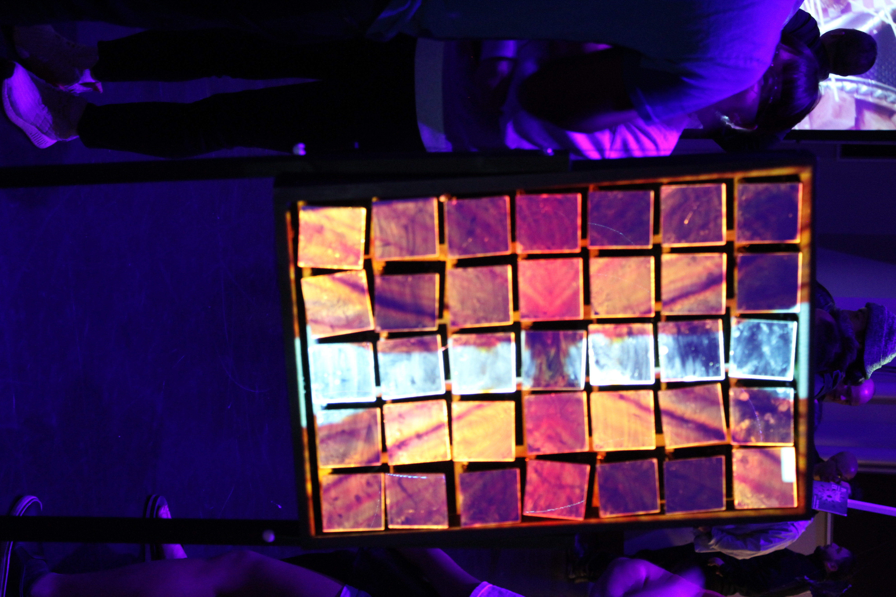
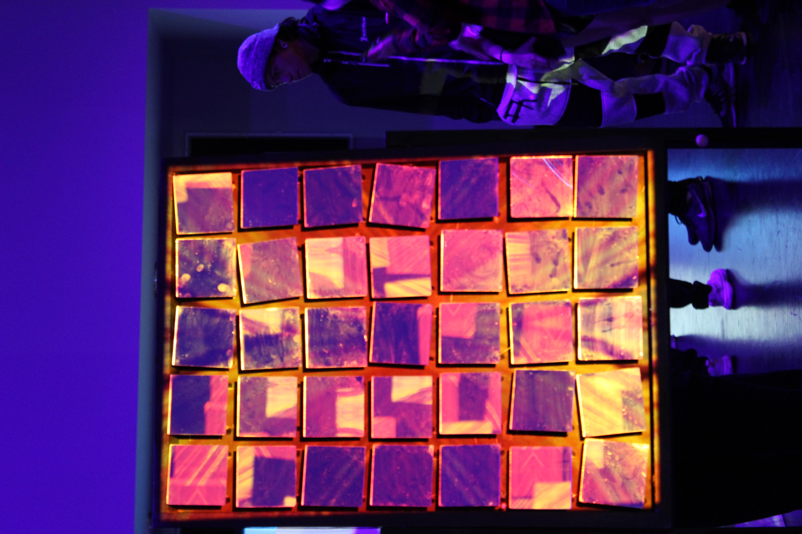
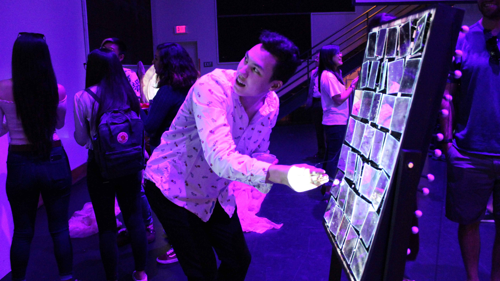
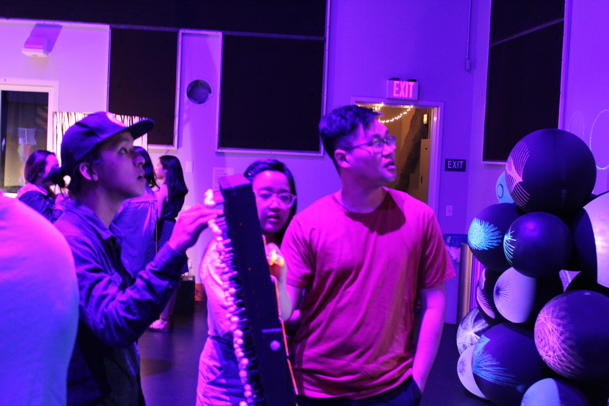
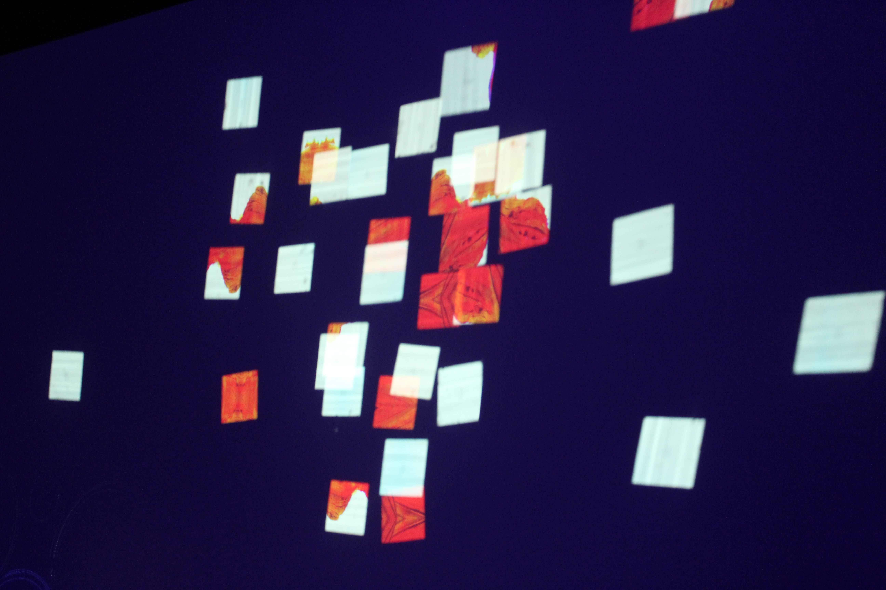
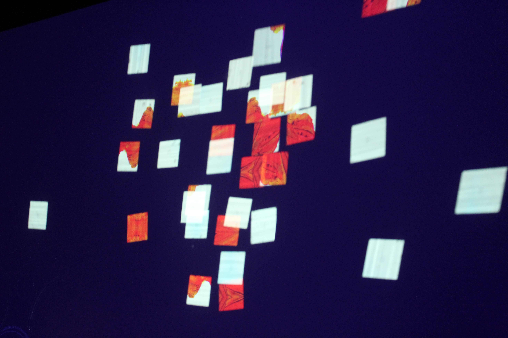

ILI-EXESA
Joshua Nolan
Ili-Exesa is an interactive conceptual projection mapping piece, blending together both digital and analog media. In our modern society social media, has become a platform for the youth to share ideas and moments. However, since the rise of Instagram and the social media influencer our online digital presence is affecting our natural environment. Geotagging has allowed more access to previously hidden locations. Being able to drop a location with an image creates a chain reaction where more and more social media “influencers” have to also get a picture at that same location. With the increase of visitors to to these places, the environment begins to change and accommodate the vast numbers of visitors. Many of these locations are unsafe and human interaction has expedited their destruction. What used to be empty land, is now a thousand car parking lots. However, with the increase of visitors a resurgence of preservationists have helped a myriad of locations become national parks. Ili-Exesa allows the audience to physically interact with the projection and over time corrupt the natural image. While there are some that like to destroy, others took the opportunity to fix the projection; similarly to how there are people who destroy and those who preserve. The image may change overtime, but will continue to be enjoyed like our natural environment.


 







 
